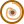

Default Map
Tunnel View (TODO)
Underwater View (TODO)
Region View
Event Zone View
Toggle Markers:
Landshrines
 Red Shrines
Blue Shrines
Green Shrines
Watershrines
 Red Shrines
Blue Shrines
Green Shrines
Portals
Portal to the Underworld
Velo Pond / Spiral Island
Palm Pond / Big survival water shrine
 Tranquil Landbridge / Cypresss Portal